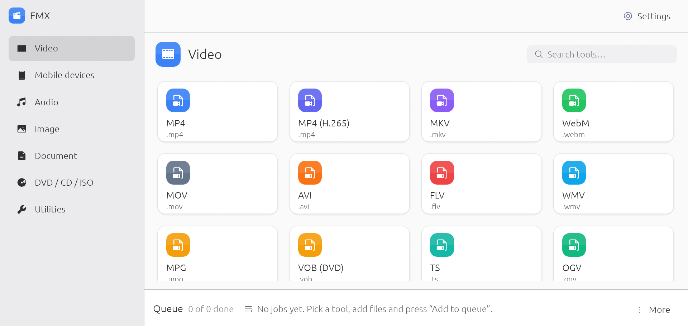

Different files. One home.
Convert videos, music, pictures, documents and discs without jumping between apps.
OPEN SOURCE. OPEN POSSIBILITIES.
Video to audio. Photos to PDFs. Big ideas to smaller files. Meet the free media toolkit that keeps things simple.
Free to use. No ads. No account needed.

Video ✳ Audio ✳ Images ✳ Documents ✳ Discs
MADE FOR THE EVERYDAY
Everything you need to move between formats,
in one calm, familiar place.
Convert videos, music, pictures, documents and discs without jumping between apps.
Add multiple files, choose a format and let the queue take care of the rest.
Light and dark themes, five languages, and a clean interface that stays out of your way.
YOURS TO DOWNLOAD
Choose your platform. Make something new.
Choose a platform to view its latest release.
For Windows 10 & 11
View Windows release ↗64-bit · Setup installerFor Intel & Apple silicon
View macOS release ↗Universal · DMGFor your favorite distribution
View Linux release ↗x86_64 · Debian packagePortable archive ↗A LITTLE MORE MOBILE
Explore FMX for Android 10 and newer. Currently a development build; a signed production APK is not available yet.
Downloads come directly from the FMX GitHub repository. Release notes & all downloads ↗
GOOD TO KNOW
Yes. FMX is open source under the MIT or Apache 2.0 license. You can use, share and modify it.
Choose a category and output format, add your files, then click “Add to queue”. Your converted files are saved next to the originals, or in a folder you choose.
The desktop download bundles its core media tools. Some document and disc features need optional programs. See the installation guide for details.
Read the troubleshooting guide or report an issue on GitHub.